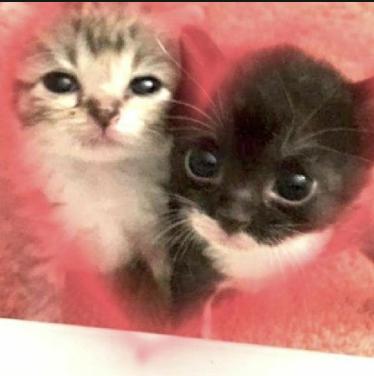

Com toda essa ajuda de Ílios, Ícaro foi capaz e teve abertura para ser quem ele realmente é, sem filtros. Além disso, durante a entrevista que Ícaro me forneceu para construir esse material, ele se arriscou e fez uma afirmação: Ícaro AMA Ílios. Mas todo o mundo, toda a nação vascaína se pergunta: Eros, Ágape ou Philia?

Nesse momento, há um detalhe a ser destacado: Ícaro, por mais que voe bem próximo de Ílios, está nessa Odisseia há menos de duas semanas. Como a leitora deve imaginar: Eros e Ágape demandam processos longos, que podem ou não serem dolorosos, para que realmente afirmações possam ser firmadas com sinceridade e firmeza, sem que nenhum dos envolvidos perca suas asas e acabe como churrasquinho no meio do mar. Por isso, nesse momento, posso lhe garantir: Ícaro ama Ílios, com a maior sinceridade presente em seu humilde coração, com amor Philia.
Nessa mesma entrevista, o nosso herói assumiu que, muitas vezes, acaba não obtendo sucesso em suas batalhas internas e, por algumas vezes, ele acaba queimando um pouco a sua relação com Ílios. Porém, eu destaco aqui: É normal se queimar e sair um pouco "chamuscado" durante a sua jornada. É isso que te faz entender o fogo, respeitar ele e utilizá-lo no futuro da melhor forma possível.